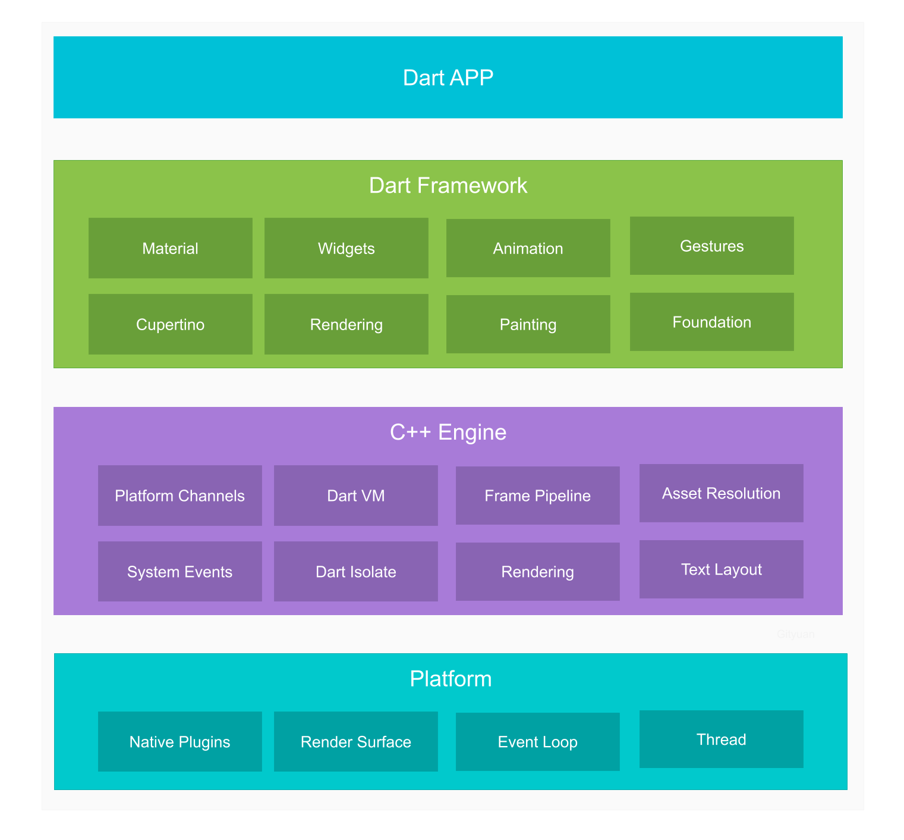

概述 在入门 Flutter 之前，先来看一下跨平台技术的分类：
WebView：主要依赖于WebView，使用前端技术开发，学习成本低，但功能受限，性能体验很差，如小程序。
原生渲染：使用 JavaScript 作为编程语言，通过中间层转化为原生控件来渲染界面，如 React Native, Weex。
绘图引擎渲染：通过调用Skia等绘图引擎进行页面渲染，不依赖于原生控件，如 Flutter, Unity。
Flutter 使用 Skia(被 Google 收购) 作为绘图引擎，Google 旗下很多产品都是用 Skia 绘制的，包括 Android，Android 内置了 Skia 引擎，而 IOS 没有(Flutter 打包会将 Skia 一起打进去)。
Flutter 使用 Dart 作为开发语言，Flutter 环境的配置可见Flutter中文网 ，其中还有示例工程。
Dart语法 简要介绍一些用法，具体使用可以查阅Dart中文网 。可以简单通过 dart test.dart 命令运行测试代码。
变量声明 可以声明一个指定类型的变量：
1 2 3 4 main() { String name = "hearing" ; print ("$name " ); }
也可以通过 var 来声明动态类型变量，当它初始值为 null 时，后面则可以赋值不同类型的值，如果给定了明确的初始值，则会根据其类型来推断变量的类型，之后不能更改了。
1 2 3 4 5 6 7 8 9 10 11 12 main() { var name = "hearing" ; print ("$name " ); } main() { var name; name = "hearing" ; name = 10 ; print ("$name " ); }
dynamic 声明变量时，系统会自动去找可用的属性和函数来调用，这种写法不太安全，因为即使把属性名写错了，编译器也不会报错。
1 2 3 4 5 main() { dynamic name = 10 ; name = "hearing" ; print ("${name.length} " ); }
运算符
/: 不会自动取整
~/: 向下取整
==: 判断内容是否相等
identical(name1, name2): 判断引用是否相等
??=: 若参数为 null 则等于后面的值，name ??= "hearing"
??: test = name ?? "hearing", 如果name不为null，则取name的值，否则值为hearing
=>: 单行时可以省略{}, Function f = (var name, var age) => print(name + age);
..: 链式调用，var person = Person("hearing", 21)..name = "hearing1"..age = 23;
?.: 类似 Koltin
is, is!, as: 类型判断，类型转换
switch: 可以给case增加别名
1 2 3 4 5 6 7 8 9 10 11 12 13 14 15 16 17 18 19 main() { var name = "B" ; switch (name) { as : case "A" : print ("A" ); break ; case "B" : print ("B" ); continue as ; break ; case "C" : print ("C" ); break ; } } B A
函数 函数可以不写返回类型，这样会被当做 dynamic 处理，则返回类型就是 return 的类型，如果没有 return 则是 null。
1 2 3 4 5 6 7 8 9 10 11 12 13 14 15 16 17 18 19 main() { var name = test(); print (name); } test() { var name = "hearing" ; return name; } main() { var name = test(); print (name); } test() { var name = "hearing" ; }
Dart 用{}表示可选参数，用[]表示位置参数：
1 2 3 4 5 6 7 8 9 10 11 12 13 void test1(var name1, {var name2 = 1 , var name3 = 2 }) { print ("test1 = $name1 , $name2 , $name3 " ); } void test2(var name1, [var name2, var name3]) { print ("test2 = $name1 , $name2 , $name3 " ); } test1("hearing" , name2: 11 , name3: 22 ); test2("hearing" , 11 , 22 );
方法也是对象，可以将方法赋值给变量，也可以把方法作为参数：
1 2 3 4 5 6 7 8 9 10 11 void test(){ print ("test" ); } var f = test;f(); void test(void handle(var name)) => handle("test" );test((name) => print (name));
面向对象
创建对象可以省略 new 关键字。
方法不能重载。
可见范围以library库为单位，一个 Dart 文件就是一个库，用_表示库级别私有，既可以修饰变量，也可以修饰对象，还可以修饰方法。
异步 Future 可以使用 Future 来处理异步任务：
1 2 3 4 5 print ("--------------" );Future.delayed(Duration (seconds: 1 ), () => "hearing" ) .then((value) => print (value)) .catchError((e) => print ("error" )) .whenComplete(() => print ("complete" ));
async/await await 要在 async 的函数里面才能使用，它最终也是转换成 Future 调用链的形式执行的。
1 2 3 4 5 6 7 void main() async { print (await getName()); } getName() { return Future.delayed(new Duration (seconds: 1 ), () => "hearing" ); }
Widget 仅支持一帧，并且在每一帧上，Flutter 都会创建一个 Widget 实例树(相当于一次性绘制整个界面)。相比之下，在 Android 上 View 绘制结束后，就不会重绘，直到调用 invalidate 时才会重绘。
StatelessWidget 和 StatefulWidget 核心特性是相同的，每一帧它们都会重新构建，不同之处在于 StatefulWidget 有一个 State 对象，它可以跨帧存储状态数据并恢复它。如果一个子 Widget 对变化做出反应，而其父 Widget 对变化没有反应，那么父 Widget 仍然可以是无状态的 Widget。
一个常见的 StatelessWidget 是 Text:
1 2 3 4 5 6 7 8 class Text extends StatelessWidget } new Text( 'I like Flutter!' , style: new TextStyle(fontWeight: FontWeight.bold), );
要让 Text 动态变化，可以将其包装在 StatefulWidget 中:
1 2 3 4 5 6 7 8 9 10 11 12 13 14 15 16 17 18 19 20 21 22 23 24 25 26 27 28 29 30 31 32 33 34 35 36 37 38 39 40 41 42 43 44 45 46 47 48 49 50 51 52 53 import 'package:flutter/material.dart' ;void main() { runApp(new SampleApp()); } class SampleApp extends StatelessWidget @override Widget build(BuildContext context) { return new MaterialApp( title: 'Sample App' , theme: new ThemeData( primarySwatch: Colors.blue, ), home: new SampleAppPage(), ); } } class SampleAppPage extends StatefulWidget SampleAppPage({Key key}) : super (key: key); @override _SampleAppPageState createState() => new _SampleAppPageState(); } class _SampleAppPageState extends State <SampleAppPage > String textToShow = "I Like Flutter" ; void _updateText() { setState(() { textToShow = "Flutter is Awesome!" ; }); } @override Widget build(BuildContext context) { return new Scaffold( appBar: new AppBar( title: new Text("Sample App" ), ), body: new Center(child: new Text(textToShow)), floatingActionButton: new FloatingActionButton( onPressed: _updateText, tooltip: 'Update Text' , child: new Icon(Icons.update), ), ); } }
1 2 3 4 5 6 7 8 9 10 11 12 13 14 15 16 17 18 19 20 21 22 23 24 25 26 27 28 29 30 31 32 33 34 35 36 37 38 39 40 41 42 43 44 45 46 47 48 49 50 51 52 53 54 55 56 57 58 59 60 61 import 'package:flutter/material.dart' ;void main() { runApp(new SampleApp()); } class SampleApp extends StatelessWidget @override Widget build(BuildContext context) { return new MaterialApp( title: 'Sample App' , theme: new ThemeData( primarySwatch: Colors.blue, ), home: new SampleAppPage(), ); } } class SampleAppPage extends StatefulWidget SampleAppPage({Key key}) : super (key: key); @override _SampleAppPageState createState() => new _SampleAppPageState(); } class _SampleAppPageState extends State <SampleAppPage > bool toggle = true ; void _toggle() { setState(() { toggle = !toggle; }); } _getToggleChild() { if (toggle) { return new Text('Toggle One' ); } else { return new MaterialButton(onPressed: () {}, child: new Text('Toggle Two' )); } } @override Widget build(BuildContext context) { return new Scaffold( appBar: new AppBar( title: new Text("Sample App" ), ), body: new Center( child: _getToggleChild(), ), floatingActionButton: new FloatingActionButton( onPressed: _toggle, tooltip: 'Update Text' , child: new Icon(Icons.update), ), ); } }
Canvas/Paint Flutter 可以使用 CustomPaint 和 CustomPainter 来绘制画布。
1 2 3 4 5 6 7 8 9 10 11 12 13 14 15 16 17 18 19 20 21 22 23 24 25 26 27 28 29 30 31 32 33 34 35 36 37 38 39 40 41 42 43 44 45 46 47 48 49 import 'package:flutter/material.dart' ;class SignaturePainter extends CustomPainter SignaturePainter(this .points); final List <Offset> points; @override void paint(Canvas canvas, Size size) { var paint = new Paint() ..color = Colors.black ..strokeCap = StrokeCap.round ..strokeWidth = 5.0 ; for (int i = 0 ; i < points.length - 1 ; i++) { if (points[i] != null && points[i + 1 ] != null ) canvas.drawLine(points[i], points[i + 1 ], paint); } } bool shouldRepaint(SignaturePainter other) => other.points != points; } class Signature extends StatefulWidget SignatureState createState() => new SignatureState(); } class SignatureState extends State <Signature > List <Offset> _points = <Offset>[]; Widget build(BuildContext context) { return new GestureDetector( onPanUpdate: (DragUpdateDetails details) { setState(() { RenderBox referenceBox = context.findRenderObject(); Offset localPosition = referenceBox.globalToLocal(details.globalPosition); _points = new List .from(_points)..add(localPosition); }); }, onPanEnd: (DragEndDetails details) => _points.add(null ), child: new CustomPaint(painter: new SignaturePainter(_points)), ); } } class DemoApp extends StatelessWidget Widget build(BuildContext context) => new Scaffold(body: new Signature()); } void main() => runApp(new MaterialApp(home: new DemoApp()));
自定义 Widget 通常是通过组合其它 Widget 来实现的，而不是继承。
1 2 3 4 5 6 7 8 9 10 11 12 13 14 15 16 17 18 19 class CustomButton extends StatelessWidget final String label; CustomButton(this .label); @override Widget build(BuildContext context) { return new RaisedButton(onPressed: () {}, child: new Text(label)); } } @override Widget build(BuildContext context) { return new Center( child: new CustomButton("Hello" ), ); } }
Route/Navigator Route 是“页面”的抽象(Activity), Navigator 是管理 Route 的 Widget, Navigator 可以通过 push 和 pop route 以实现页面切换。可以将具有指定 Route 的 Map 传递到顶层 MaterialApp 实例：
1 2 3 4 5 6 7 8 9 10 void main() { runApp(new MaterialApp( home: new MyAppHome(), routes: <String , WidgetBuilder> { '/a' : (BuildContext context) => new MyPage(title: 'page A' ), '/b' : (BuildContext context) => new MyPage(title: 'page B' ), '/c' : (BuildContext context) => new MyPage(title: 'page C' ), }, )); }
然后可以通过 Navigator 来切换到命名路由的页面：
1 Navigator.of(context).pushNamed('/b' );
Navigator 可用于从已经push到栈的路由中获取结果，这可以通过等待push返回的Future来完成。例如，如果要启动让用户选择其位置的路由，则可以执行以下操作：
1 Map coordinates = await Navigator.of(context).pushNamed('/location' );
然后在位置路由中，一旦用户选择了他们的位置，可以将结果”pop”出栈：
1 Navigator.of(context).pop({"lat" :43.821757 ,"long" :-79.226392 });
Flutter 可以通过直接与 Android 层通信并请求共享的数据来处理来自Android的Intents。在下面的例子中，我们注册文本共享intent，所以其他应用程序可以共享文本到我们的Flutter应用程序。
这个应用程序的基本流程是我们首先处理Android端的共享文本数据，然后等待Flutter请求数据，然后通过MethodChannel发送。
首先在在AndroidManifest.xml中注册我们想要处理的intent：
1 2 3 4 5 6 7 8 9 10 11 12 13 14 15 16 17 18 19 20 21 22 23 24 <activity android:name =".MainActivity" android:launchMode ="singleTop" android:theme ="@style/LaunchTheme" android:configChanges ="orientation|keyboardHidden|keyboard|screenSize|locale|layoutDirection" android:hardwareAccelerated ="true" android:windowSoftInputMode ="adjustResize" > <meta-data android:name ="io.flutter.app.android.SplashScreenUntilFirstFrame" android:value ="true" /> <intent-filter > <action android:name ="android.intent.action.MAIN" /> <category android:name ="android.intent.category.LAUNCHER" /> </intent-filter > <intent-filter > <action android:name ="android.intent.action.SEND" /> <category android:name ="android.intent.category.DEFAULT" /> <data android:mimeType ="text/plain" /> </intent-filter > </activity >
然后，在MainActivity中，可以处理intent，一旦我们从intent中获得共享文本数据，我们就会持有它，直到Flutter在完成准备就绪时请求它。
1 2 3 4 5 6 7 8 9 10 11 12 13 14 15 16 17 18 19 20 21 22 23 24 25 26 27 28 29 30 31 32 public class MainActivity extends FlutterActivity String sharedText; @Override protected void onCreate (Bundle savedInstanceState) super .onCreate(savedInstanceState); GeneratedPluginRegistrant.registerWith(this ); Intent intent = getIntent(); String action = intent.getAction(); String type = intent.getType(); if (Intent.ACTION_SEND.equals(action) && type != null ) { if ("text/plain" .equals(type)) { handleSendText(intent); } } new MethodChannel(getFlutterView(), "app.channel.shared.data" ).setMethodCallHandler(new MethodChannel.MethodCallHandler() { @Override public void onMethodCall (MethodCall methodCall, MethodChannel.Result result) if (methodCall.method.contentEquals("getSharedText" )) { result.success(sharedText); sharedText = null ; } } }); } void handleSendText (Intent intent) sharedText = intent.getStringExtra(Intent.EXTRA_TEXT); } }
最后，在Flutter中可以在渲染Flutter视图时请求数据。
1 2 3 4 5 6 7 8 9 10 11 12 13 14 15 16 17 18 19 20 21 22 23 24 25 26 27 28 29 30 31 32 33 34 35 36 37 38 39 40 41 42 43 44 45 46 47 48 49 50 51 52 import 'package:flutter/material.dart' ;import 'package:flutter/services.dart' ;void main() { runApp(new SampleApp()); } class SampleApp extends StatelessWidget @override Widget build(BuildContext context) { return new MaterialApp( title: 'Sample Shared App Handler' , theme: new ThemeData( primarySwatch: Colors.blue, ), home: new SampleAppPage(), ); } } class SampleAppPage extends StatefulWidget SampleAppPage({Key key}) : super (key: key); @override _SampleAppPageState createState() => new _SampleAppPageState(); } class _SampleAppPageState extends State <SampleAppPage > static const platform = const MethodChannel('app.channel.shared.data' ); String dataShared = "No data" ; @override void initState() { super .initState(); getSharedText(); } @override Widget build(BuildContext context) { return new Scaffold(body: new Center(child: new Text(dataShared))); } getSharedText() async { var sharedData = await platform.invokeMethod("getSharedText" ); if (sharedData != null ) { setState(() { dataShared = sharedData; }); } } }
异步UI Dart 是单线程执行模型，支持 Isolates(在另一个线程上运行Dart代码), 事件循环和异步编程。除非启动一个Isolate，否则我们的Dart代码将在主UI线程中运行，并由事件循环驱动。例如可以在UI线程上运行网络请求代码而不会导致UI挂起(因为网络请求是异步的)：
1 2 3 4 5 6 7 loadData() async { String dataURL = "https://jsonplaceholder.typicode.com/posts" ; http.Response response = await http.get (dataURL); setState(() { widgets = JSON.decode(response.body); }); }
更新UI可以调用setState，这会触发build方法再次运行并更新数据。
由于Flutter是单线程的，运行一个事件循环，所以不必担心线程管理。要异步运行代码，可以将函数声明为异步函数，并在该函数中等待这个耗时任务，如上所述。
在Android上继承AsyncTask时，通常会覆盖3个方法，OnPreExecute、doInBackground和onPostExecute。在Flutter中没有这种模式的等价物，因为只需等待一个长时间运行的函数，而Dart的事件循环将负责其余的事情。但有时可能需要处理大量数据，导致UI可能会挂起。
在这种情况下，在Flutter中，可以利用多个CPU内核来执行耗时或计算密集型任务，这通过使用Isolates来完成，它是一个独立的执行线程，运行时不会与主线程共享任何内存。这意味着不能从该线程访问变量或通过调用setState来更新你的UI。
我们来看一个简单的Isolate的例子，以及如何与主线程通信和共享数据以更新UI：
1 2 3 4 5 6 7 8 9 10 11 12 13 14 15 16 17 18 19 20 21 22 23 24 25 26 27 28 29 30 31 32 loadData() async { ReceivePort receivePort = new ReceivePort(); await Isolate.spawn(dataLoader, receivePort.sendPort); SendPort sendPort = await receivePort.first; List msg = await sendReceive(sendPort, "https://jsonplaceholder.typicode.com/posts" ); setState(() { widgets = msg; }); } static dataLoader(SendPort sendPort) async { ReceivePort port = new ReceivePort(); sendPort.send(port.sendPort); await for (var msg in port) { String data = msg[0 ]; SendPort replyTo = msg[1 ]; String dataURL = data; http.Response response = await http.get (dataURL); replyTo.send(JSON.decode(response.body)); } } Future sendReceive(SendPort port, msg) { ReceivePort response = new ReceivePort(); port.send([msg, response.sendPort]); return response.first; }
dataLoader是在它自己的独立执行线程中运行的隔离区，可以在其中执行CPU密集型任务。
上面通过使用 http package 来请求网络，可以通过在pubspec.yaml中添加依赖项来使用它：
1 2 3 dependencies: // ... http: '>=0.11.3+12'
项目资源 Flutter遵循像IOS这样简单的3种分辨率格式: 1x, 2x, and 3x。创建一个名为images的文件夹，并为每个图像文件生成一个@2x和@3x文件，并将它们放置在如下这样的文件夹中：
1 2 3 …/my_icon.png …/2.0x/my_icon.png …/3.0x/my_icon.png
然后在pubspec.yaml文件中声明这些图片：
1 2 3 assets: - images/a_dot_burr.jpeg - images/a_dot_ham.jpeg
然后可以使用AssetImage访问图像：return new AssetImage("images/a_dot_burr.jpeg");
可以创建一个名为Strings的类来存储字符串：
1 2 3 class Strings static String welcomeMessage = "Welcome To Flutter" ; }
然后访问：new Text(Strings.welcomeMessage)。鼓励Flutter开发者使用 intl package 进行国际化和本地化。
虽然在Flutter项目中的Android文件夹下有Gradle文件，但只有在添加平台相关所需的依赖关系时才使用这些文件，否则应该使用pubspec.yaml声明用于Flutter的外部依赖项。dart yaml依赖仓库：Pub 。
Flutter架构 借用网上的一张图：

生成的apk结构如下：
1 2 3 4 5 6 7 8 9 10 11 12 13 14 15 16 17 18 19 20 21 22 23 │ AndroidManifest.xml │ classes.dex │ resources.arsc ├─assets │ └─flutter_assets │ │ AssetManifest.json │ │ FontManifest.json │ │ isolate_snapshot_data │ │ kernel_blob.bin │ │ NOTICES │ │ vm_snapshot_data │ ├─fonts │ │ MaterialIcons-Regular.ttf │ └─packages │ └─cupertino_icons │ └─assets │ CupertinoIcons.ttf ├─kotlin ├─lib │ └─arm64-v8a │ libflutter.so ├─META-INF └─res